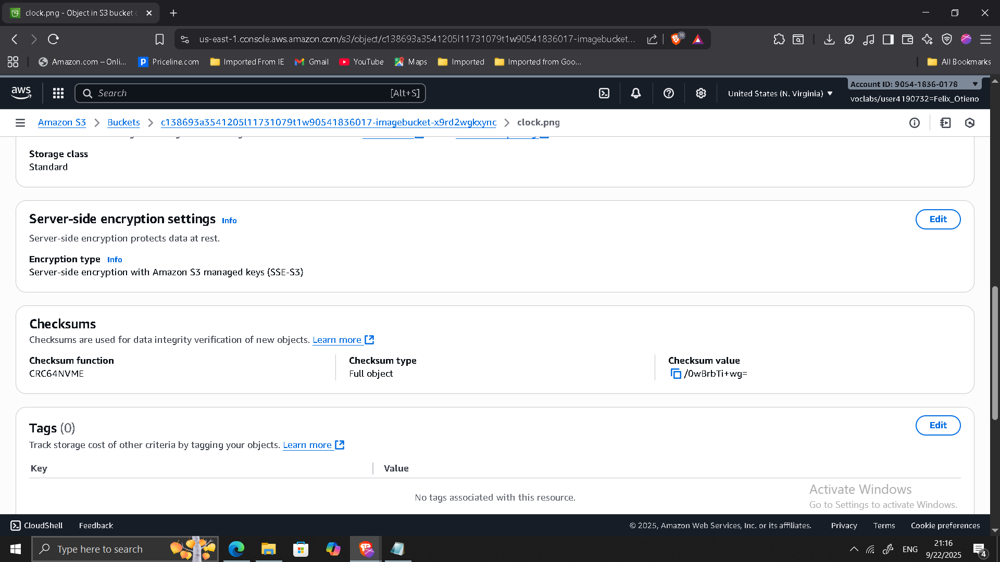
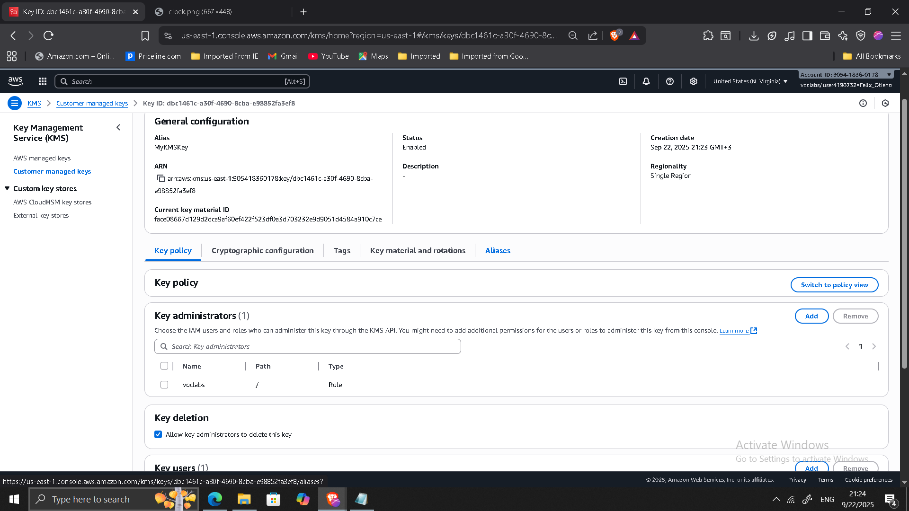
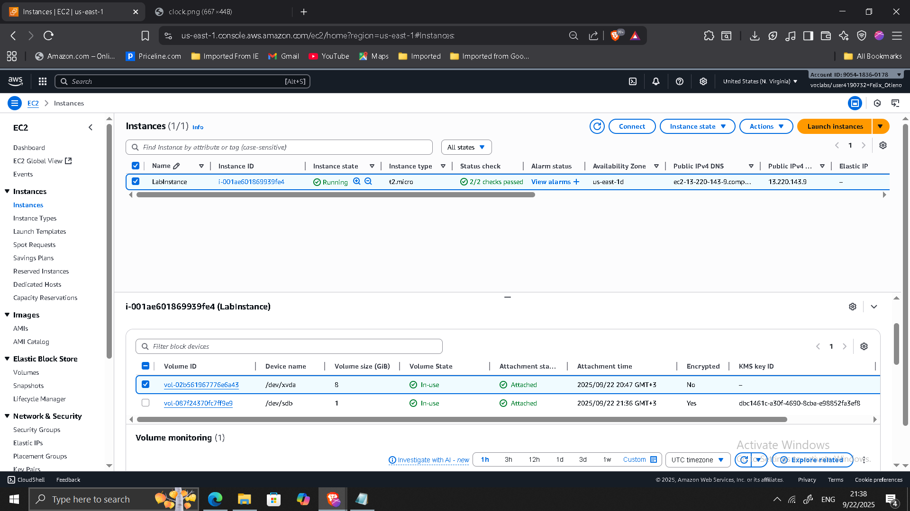

Encrypting Data at Rest with AWS KMS, S3, and EBS
📌 Project Overview
I implemented AWS encryption services to protect sensitive data at rest across different storage services. The project demonstrates how to use Amazon S3, AWS Key Management Service (KMS), and Amazon EBS encryption together to meet compliance and security best practices.
This involved creating and managing a customer managed KMS key, applying it to encrypted EBS volumes, reviewing CloudTrail logs for key usage, and testing the impact of disabling/re-enabling the key.
🔹 Key Outcomes
- Implemented default S3 encryption (SSE-S3) and verified object access.
- Created a customer managed KMS key with usage permissions.
- Encrypted and attached an EBS volume using the KMS key.
- Observed the impact of disabling a KMS key on encrypted resources.
- Analyzed CloudTrail logs for key usage (CreateGrant, Decrypt, GenerateDataKeyWithoutPlaintext).
- Enabled automatic key rotation for compliance.
🔹 Project Steps
1. Reviewing Default Encryption for S3 Objects
- Uploaded
clock.pngto S3 bucket. - Verified encryption applied automatically with SSE-S3.
- Confirmed public access decrypted object correctly.

2. Creating an AWS KMS Key
- Created a customer managed symmetric key (MyKMSKey).
- Assigned admin and usage permissions.
- Verified in KMS console.

3. Creating and Attaching an Encrypted EBS Volume
- Created a 1 GiB encrypted EBS volume using MyKMSKey.
- Attached to EC2 instance with existing unencrypted root volume.

4. Disabling the KMS Key and Observing Effects
- Disabled MyKMSKey in KMS console.
- Tried re-attaching encrypted volume → operation failed (expected).
5. Analyzing AWS KMS Activity with CloudTrail
- Used CloudTrail to review KMS events:
- CreateGrant
- Decrypt
- GenerateDataKeyWithoutPlaintext
6. Reviewing Key Rotation
- Enabled automatic annual key rotation for MyKMSKey.
- Verified in console.
🔹 Conclusion
This project demonstrates how AWS services protect data at rest with encryption. By integrating S3 default encryption, KMS key management, EBS encryption, CloudTrail monitoring, and key rotation, I gained hands-on experience with securing cloud workloads while maintaining compliance and operational visibility.